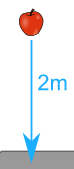

Percentage Error
The difference between Approximate and Exact Values,
as a percentage of the Exact Value.
Comparing Approximate to Exact
First find the Error:
Subtract one value from the other. Ignore any minus sign.
Example: I estimated 260 people, but 325 came.
260 − 325 = −65, ignore the "−" sign, so my error is 65
Then find the Percentage Error:
Show the error as a percent of the exact value, so divide by the exact value and make it a percentage:
Example continued: 65/325 = 0.2 = 20%
Percentage Error is all about comparing a guess or estimate to an exact value. See percentage change, difference and error for other options.
How to Calculate
Follow these steps:
| Step 1: Calculate the error (subtract one value from the other) ignore any minus sign. |
| Step 2: Divide the error by the exact value (we get a decimal number) |
| Step 3: Convert that to a percentage (by multiplying by 100 and adding a "%" sign) |
As A Formula
This is the formula for "Percentage Error":
|Approximate Value − Exact Value| |
× 100% |
|Exact Value| |
(The "|" symbols mean absolute value, so negatives become positive)
Example: I thought 70 people would turn up to the concert, but in fact 80 did!
|70 − 80| |80| × 100% = 10 80 × 100% = 12.5%
I was in error by 12.5%Example: The report said the carpark held 240 cars, but we counted only 200 parking spaces.
|240 − 200| |200| × 100% = 40 200 × 100% = 20%
The report had a 20% error.We can also use a theoretical value (when it is well known) instead of an exact value.

Example: Sam does an experiment to find how long it takes an apple to drop 2 meters.
The theoretical value (using physics formulas) is 0.64 seconds.
But Sam measures 0.62 seconds, which is an approximate value.
| |0.62 − 0.64| |0.64| × 100% | = 0.02 0.64 × 100% |
| = 3% (to nearest 1%) |
So Sam was only 3% off.
Without "Absolute Value"
We can also use the formula without "Absolute Value". This can give a positive or negative result, which may be useful to know.
Approximate Value − Exact Value |
× 100% |
Exact Value |
Example: They forecast 20 mm of rain, but we really got 25 mm.
| 20 − 25 25 × 100% | = −5 25 × 100% |
| = −20% |
They were in error by −20% (their estimate was too low)

In Measurement
Measuring instruments are not exact!
And we can use Percentage Error to estimate the possible error when measuring.
Example: You measure the plant to be 80 cm high (to the nearest cm)
This means you could be up to 0.5 cm wrong (the plant could be between 79.5 and 80.5 cm high)
So your percentage error is:
0.5 80 × 100% = 0.625%
(We don't know the exact value, so we divided by the measured value instead.)
Find out more at Errors in Measurement.